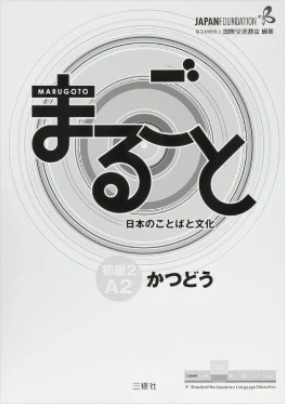

Japanese
Language school
in Saint-Petersburg
日本語学校
Школа японского языка
Школа
Школа
изучения
японского
языка
校ス学
コでオ
超クルなコス
Благодаря прогрессивной методике преподавания,
мы успешно совмещаем обучение японскому языку
и развитие интеллектуального ресурса детей
и взрослых.
мы успешно совмещаем обучение японскому языку
и развитие интеллектуального ресурса детей
и взрослых.
С нами занятия будут
интересными
и максимально
полезными りません
интересными
и максимально
полезными りません
-
Профессиональный методист с профильным
образованием, полученным в Японии, который точно
знает, какой порядок действий приведет вас
к успеху изучения языка. -
Большое количество заданий и упражнений
из учебных пособий и художественной литературы
нашей мини-библиотеки в дополнение к основному
курсу по учебнику. -
Особое внимание уделяется работе с японским
интернетом-начинаем «погружение» уже с первых
занятий! Вы научитесь находить любую
интересующую информацию на сайтах, не имеющих
перевода на европейские языки, самостоятельно
планировать уникальные маршруты для своих
туристических поездок. -
Использование в программе «живых» учебных
материалов их Японии, среди которых упаковки
от продуктов питания и предметов бытовой химии,
фото вывесок и обьявлений, рекламные листовки
из почтовых ящиков и даже именные банковские
книжки - всё то, что будет окружать вас по приезде
в страну изучаемого языка.
Учебные материалы
Для улучшения коммуникативных способностей используется учебник, в котором содержатся не только
упражнения по японскому языку, но и информация о культуре Японии и японском обществе - учебные пособия
«Маругото». На время обучения во временное пользование выдается следующий комплект учебных материалов:
уровень Введения. Деятельность»  «Маругото - Японский язык и культура,
уровень Введения. Деятельность»
Абонементы
на занятия в группах
- 4 занятия
- 1 раз в неделю по 1,5
часа: 4000 руб./ мес - ЗАПИСАТЬСЯ →
- 8 занятий
- 2 раза в неделю по 1,5 часа:
7000 руб./ мес - ЗАПИСАТЬСЯ →
Индивидуальные занятия
- 1 занятие
- 200 руб.
60 мин. - ЗАПИСАТЬСЯ →
- 4 занятия
- 7500 руб.
240 мин. - ЗАПИСАТЬСЯ →
- 8 занятий
- 14600 руб.
480 мин. - ЗАПИСАТЬСЯ →
- Вариативность
- - Можно выбрать
любой язык - ЗАПИСАТЬСЯ →